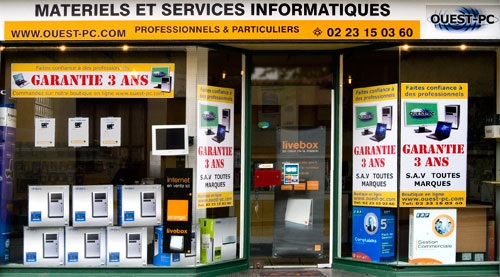

Ouest-PC
Ouest-PC est mon premier stage de 1 mois et demi où j'ai y pu faire de l'inforgérence,réparation d'ordinateur,service à la personne.C'est une petite entreprise qui se situe dans la région de Saint-Malo (Châteauneuf).
ENSM
ENSM est mon deuxième et troisième stage qui ont durée à eux deux 4 mois. La bas j'y ai fait un plan web où l'on peut parametré à distance les switchs, routeurs et participé à la maintenance informatique de l'école.
Jacques Cartier
Jacques Cartier est mon quatrième stage qui à durée 3 mois, j'ai pu prendre part à de l'assistance et maintenance informatique ainsi qu'une migration réseau de l'établissement
